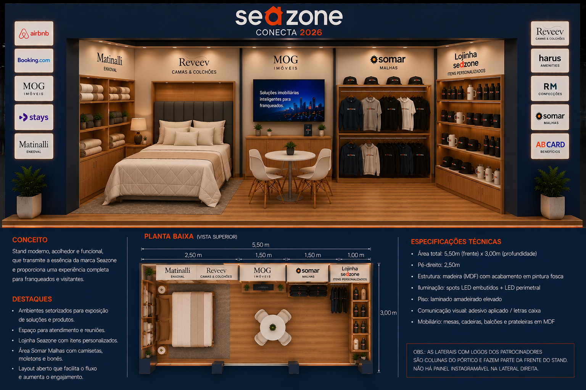

O stand vira um U: backdrop posterior (Reveev · MOG · Somar) + 2 paredes laterais (Matinalli esq. + Lojinha dir.) de 3,00 m cada. As zonas Matinalli e Lojinha formam L de canto com Reveev e Somar respectivamente, aumentando a superfície de exposição em 6,00 m lineares extras.
É a primeira coisa que o visitante enxerga. Estrutura em U aberto para trás: 2 colunas laterais + viga superior de 5,50 × 0,50 m, revestidas em tecido azul. Testeira central com o logo Seazone iluminado (destaque único). 9 logos dos parceiros distribuídos nas 2 colunas laterais (5 esquerda + 4 direita), empilhados verticalmente.
Backdrop posterior de 5,50 × 2,50 m (Reveev + MOG + Somar) + 2 paredes laterais de 3,00 × 2,50 m (Matinalli esq. + Lojinha dir.). Todas revestidas em tecido azul, com aplicações de TV, nichos e prateleiras por zona.
Todos os painéis em MDF 18 mm sem pintura. Revestimento em tecido azul aplicado por cola de contato + grampeamento no verso.
Estrutura apoiada diretamente sobre o piso cinza do pavilhão. Rodapé perimetral de 5 cm com passagem elétrica embutida (5,50 m frente + 5,50 m fundo + 2 × 3,00 m laterais).
Cabos passam por canaletas dentro do esqueleto do pórtico, do backdrop e no rodapé. Nenhuma fiação aparente.
Estrutura em U aberto para trás: 2 colunas laterais de 0,40 × 0,40 × 2,50 m + viga superior contínua de 5,50 × 0,50 m. Todo revestido em tecido azul. Testeira superior: Seazone iluminado + slogan (destaque único). Colunas laterais: 9 logos dos parceiros empilhados verticalmente (5 esq. + 4 dir.) — ver seção 3.
Parede única de fundo, revestida em tecido azul. Divisão em 3 zonas: Reveev 2,50 m (esq.) + MOG 1,50 m (central) + Somar 1,50 m (dir.). Sem paredes físicas de separação — mudança apenas de aplicação (cabeceira / TV+nichos / prateleiras).
Parede lateral inteira dedicada à Matinalli: nicho iluminado central 1,20 × 0,30 × 0,60 m + logo Matinalli em letra caixa + expositor baixo 1,50 × 0,50 × 0,90 m encostado na parede com dobras de enxoval. Forma L de canto com a zona Reveev (backdrop frontal esquerdo) — enxoval + cama juntos criam a ambientação de quarto.
Aplicação no backdrop: cabeceira estofada em MDF 18 mm revestida (1,80 × 0,90 m) + logo Reveev em letra caixa. À frente: base de cama em MDF 18 mm (1,80 × 1,90 m) com colchão e roupas de cama expostas. Encosta na parede lateral Matinalli, formando o L do canto esquerdo.
Aplicação no backdrop: TV 43" central + 3 nichos superiores iluminados (0,40 × 0,30 m cada) + logo MOG em letra caixa. À frente: balcão baixo 1,40 × 0,50 × 0,45 m para folhetaria e brinde + 2 banquetas altas para atendimento.
Aplicação no backdrop: 3 prateleiras horizontais em MDF 15 mm revestidas (1,40 × 0,30 m) para exposição de peças dobradas + logo Somar em letra caixa. À frente: balcão-vitrine 1,40 × 0,50 × 0,90 m. Encosta na parede lateral Lojinha, formando o L do canto direito.
Parede lateral inteira dedicada à Lojinha Seazone: 4 prateleiras em MDF 15 mm revestidas (1,50 × 0,25 m) + logo Lojinha Seazone em letra caixa. À frente da parede: balcão de atendimento 1,50 × 0,50 × 1,05 m (tampo MDF 25 mm) + 1 banqueta + arara de roupas (item 9.4) para moletons e camisetas Seazone.
Testeira superior: exclusiva para a marca Seazone (destaque único, letra caixa iluminada). Colunas laterais (0,40 × 0,40 × 2,50 m cada): recebem os logos dos 9 parceiros empilhados verticalmente na face frontal (visível de fora). Todas as peças em acrílico 5 mm com pintura fosca, coladas sobre o tecido azul + fita 3M dupla face industrial.
| Elemento | Dimensão (L × A) | Material | Posição |
|---|---|---|---|
| Logo Seazone + "Conecta Franquia 2026" | 3,20 × 0,35 m | Letra caixa acrílico 8 mm iluminada (LED interno) | Testeira central · eixo do stand |
| Logo Airbnb | 0,35 × 0,15 m | Acrílico 5 mm recortado c/ pintura fosca | Coluna esquerda · pos. 1 (topo) |
| Logo Booking | 0,35 × 0,15 m | Acrílico 5 mm recortado | Coluna esquerda · pos. 2 |
| Logo MOG Imóveis | 0,35 × 0,15 m | Acrílico 5 mm recortado | Coluna esquerda · pos. 3 (meio) |
| Logo Stays | 0,35 × 0,15 m | Acrílico 5 mm recortado | Coluna esquerda · pos. 4 |
| Logo Somar Malhas · AB Card | 0,35 × 0,15 m | Adesivo recortado ou acrílico 3 mm | Coluna esquerda · pos. 5 (base) |
| Logo Matinalli | 0,35 × 0,15 m | Acrílico 5 mm recortado | Coluna direita · pos. 1 (topo) |
| Logo Reveev | 0,35 × 0,15 m | Acrílico 5 mm recortado | Coluna direita · pos. 2 |
| Logo Harus | 0,35 × 0,15 m | Acrílico 5 mm recortado | Coluna direita · pos. 3 |
| Logo RM Confecções | 0,35 × 0,15 m | Acrílico 5 mm recortado | Coluna direita · pos. 4 (base) |
Tecido tipo sarja peletizada ou veludo curto, azul marinho Seazone (referência Pantone 7693 C / RAL 5003). Gramatura mínima 250 g/m². Largura útil 1,40 m.
Cola de contato aplicada em toda a face frontal do MDF + grampeamento no verso (grampos 8 mm). Bordas dobradas em 3 cm com sobreposição no verso.
Backdrop posterior (5,50 × 2,50 = 13,75 m²) + testeira (5,50 × 0,50 = 2,75 m²) + 2 paredes laterais (2 × 3,00 × 2,50 = 15,00 m²) + frentes de bancadas/balcões (~3,5 m²) + laterais aparentes (~3 m²).
~46 m² de tecido considerando 20% de sobras (dobras, emendas, refeitura de módulos). Comprar em rolo único para evitar variação de lote.
| Componente | Seção | Qtd | Comp. (m) | Total (m) |
|---|---|---|---|---|
| Montante vertical frontal (a cada ~72 cm) | 5×5 cm | 8 | 2,50 | 20,00 |
| Travessa superior (fixação testeira) | 5×5 cm | 2 | 5,50 | 11,00 |
| Travessa inferior (baldrame) | 5×5 cm | 2 | 5,50 | 11,00 |
| Reforço diagonal (contraventamento) | 5×5 cm | 4 | 1,50 | 6,00 |
| Montante vertical lateral (Matinalli + Lojinha) | 5×5 cm | 10 | 2,50 | 25,00 |
| Travessa horizontal laterais (sup./inf.) | 5×5 cm | 4 | 3,00 | 12,00 |
| Total linear de sarrafo pinus 5×5 | 85,00 m | |||
| Peça | Espessura | Dim. (mm) | Qtd | Uso |
|---|---|---|---|---|
| Backdrop frontal — zona Reveev (M1) | 18 mm | 2500 × 2500 | 1 | Backpanel frontal — revestido |
| Backdrop frontal — zona MOG (M2) | 18 mm | 1500 × 2500 | 1 | Backpanel frontal — revestido |
| Backdrop frontal — zona Somar (M3) | 18 mm | 1500 × 2500 | 1 | Backpanel frontal — revestido |
| Backdrop frontal — verso M1–M3 | 15 mm | 2500+1500+1500 × 2500 | 3 | Fechamento posterior |
| Parede lateral ESQ — Matinalli | 18 mm | 3000 × 2500 | 1 | Parede lateral interna — revestido |
| Parede lateral DIR — Lojinha Seazone | 18 mm | 3000 × 2500 | 1 | Parede lateral interna — revestido |
| Verso das paredes laterais (2) | 15 mm | 3000 × 2500 | 2 | Fechamento posterior externo |
| Caixa da testeira (frente) | 15 mm | 2750 × 500 | 2 | Testeira LED — revestida (2 peças = 5,50 m) |
| Caixa da testeira (topo e sanca) | 15 mm | 2750 × 300 | 2 | Tampo superior + sanca |
| Tampo balcão Lojinha (lateral dir) | 25 mm | 1500 × 500 | 1 | Bancada de atendimento |
| Corpo balcão Lojinha (lateral dir) | 18 mm | 1500 × 1050 / 500 × 1050 | 3 | Frente + laterais — revestido |
| Balcão baixo MOG (M2) | 18 mm | 1400 × 500 / 500 × 450 | 3 | Frente + laterais — revestido |
| Balcão-vitrine Somar (M3) | 18 mm | 1400 × 500 / 500 × 900 | 3 | Frente + laterais — revestido |
| Bancada expositor Matinalli (lateral esq) | 18 mm | 1500 × 500 / 500 × 900 | 3 | Bancada c/ base — revestido |
| Base cama Reveev (M1) | 18 mm | 1800 × 1900 | 1 | Estrado da cama |
| Cabeceira Reveev (backdrop M1) | 18 mm | 1800 × 900 | 1 | Cabeceira estofada — revestida |
| Prateleiras Lojinha (lateral dir) | 15 mm | 1500 × 250 | 4 | Exposição — revestidas |
| Prateleiras Somar (M3) | 15 mm | 1400 × 300 | 3 | Exposição de dobras — revestidas |
| Nichos iluminados MOG (M2) | 15 mm | 400 × 300 | 6 | Fundo + laterais dos nichos |
| Nicho iluminado Matinalli (lateral esq) | 15 mm | 1200 × 600 | 1 | Fundo + laterais |
| Rodapé perimetral | 15 mm | 5500 × 50 / 3000 × 50 | 4 | Acabamento base (frente + fundo + 2 laterais) |
| Material | Chapas | Observação |
|---|---|---|
| MDF 18 mm cru | 6 | Backdrop 3 zonas + 2 laterais em L + balcões + base cama |
| MDF 15 mm cru | 4 | Verso paredes, testeira, nichos, prateleiras, rodapés |
| MDF 25 mm cru | 1 | Tampo do balcão da Lojinha |
| Total geral | 11 | c/ margem ~10% de sobra |
| Item | Especificação | Qtd |
|---|---|---|
| Parafuso autoatarraxante | 4,5 × 40 mm (estrutura pinus) | 450 un |
| Parafuso p/ MDF cabeça chata | 3,5 × 30 mm | 300 un |
| Parafuso p/ MDF cabeça chata | 3,5 × 45 mm | 150 un |
| Cantoneira L reforço zincada | 50 × 50 × 40 mm | 24 un |
| Suporte prateleira zamac | Pino 6 mm + copo | 40 un |
| Suporte TV VESA universal | 200 × 200 mm (até 55") | 1 un |
| Dobradiça caneco 35 mm | Reta (balcão Lojinha) | 6 un |
| Puxador embutido inox | 96 mm | 3 un |
| Sapata reguladora nivelamento | M10 × 50 mm | 16 un |
| Cola de contato à base de neoprene | Lata 3,6 L (aplicação em MDF) | 3 latas |
| Grampos p/ grampeador pneumático | 8 mm — caixa 5.000 un | 2 cx |
| Fita adesiva dupla face industrial | 19 mm × 20 m — acabamento de borda | 4 rolos |
| Tesoura de tapeceiro + estilete | Ferramentas | 2 kits |
| Item | Especificação | Qtd |
|---|---|---|
| Fita LED perimetral | 5 m · 4000 K · IP20 · 14 W/m | 4 rolos |
| Fita LED sanca da testeira | 5 m · 3000 K · IP20 | 2 rolos |
| Spot LED embutido | Ø 90 mm · 7 W · 4000 K · biv. | 12 un |
| Fonte chaveada 12 V | 60 W bivolt | 3 un |
| Cabo PP 2 × 1,5 mm² | Interligações internas | 30 m |
| Régua c/ 5 tomadas + filtro | Bivolt 10 A | 3 un |
| Peça | Local | Dim. (L × P × A) | Qtd | Material |
|---|---|---|---|---|
| Prateleira flutuante Lojinha | Lateral DIR · parede | 1,50 × 0,25 × 0,03 m | 4 | MDF 15 mm revestido em tecido azul |
| Prateleira Somar (dobras) | M3 · backdrop frontal | 1,40 × 0,30 × 0,03 m | 3 | MDF 15 mm revestido em tecido azul |
| Nicho iluminado MOG | M2 · backdrop superior | 0,40 × 0,30 × 0,30 m | 3 | MDF 15 mm interno off-white + LED |
| Nicho central Matinalli | Lateral ESQ · centralizado | 1,20 × 0,30 × 0,60 m | 1 | MDF 15 mm interno off-white + LED |
| Peça | Local | Dim. (L × P × A) | Qtd | Acabamento |
|---|---|---|---|---|
| Balcão de atendimento Lojinha | Lateral DIR (rente à parede) | 1,50 × 0,50 × 1,05 m | 1 | Tampo MDF 25 mm rev. tecido + frente rev. tecido |
| Balcão-vitrine Somar | M3 · backdrop frontal | 1,40 × 0,50 × 0,90 m | 1 | MDF 18 mm rev. tecido + tampo vidro/laminado |
| Balcão baixo MOG (folhetaria) | M2 · backdrop frontal | 1,40 × 0,50 × 0,45 m | 1 | MDF 18 mm rev. tecido |
| Bancada expositor Matinalli | Lateral ESQ (rente à parede) | 1,50 × 0,50 × 0,90 m | 1 | MDF 18 mm rev. tecido |
| Mesa lounge redonda | Área de convívio central | Ø 0,60 × 0,75 m | 1 | Tampo laminado branco + pé metálico preto |
| Peça | Local | Qtd | Especificação |
|---|---|---|---|
| Banqueta alta estofada | Balcão Lojinha (lateral DIR) | 1 | Assento estofado bege, base metálica preta, alt. 0,75 m |
| Banqueta alta estofada | Balcão MOG (M2 · backdrop) | 2 | Mesmo modelo acima |
| Cadeira lounge estofada | Área central (mesa redonda) | 3 | Cor bege/off-white, estilo tulipa |
| Banco/pouf decorativo | M1 · pé da cama Reveev | 1 | Pouf redondo bege |
| Peça | Dim. (L × P × A) | Qtd | Especificação |
|---|---|---|---|
| Arara de roupas em madeira | 1,50 × 0,50 × 1,60 m | 1 | Estrutura em pinus torneado (Ø 3 cm) c/ base retangular MDF 18 mm rev. tecido azul; barra superior de aço cromado Ø 25 mm p/ cabides |
| Cabides de madeira | — | 15 | Cabides madeirados padronizados p/ enxoval e brindes |
Posicionamento sugerido: na lateral direita (parede da Lojinha), ao lado do balcão de atendimento, funcionando como chamariz para moletons e camisetas Seazone.
| Etapa | Data / Hora | Duração | Equipe |
|---|---|---|---|
| Corte + usinagem em marcenaria | 28 a 30/07 | 3 dias | Fornecedor |
| Revestimento em tecido (tapeçaria) | 31/07 a 02/08 | 3 dias | Tapeceiro + 1 aux. |
| Transporte + descarga no Square | 03/08 · 22h | 2 h | 2 ajudantes |
| Montagem do esqueleto (pinus) | 04/08 · 00h–02h | 2 h | 2 montadores |
| Fixação de módulos MDF revestidos | 04/08 · 02h–04h | 2 h | 2 montadores |
| Instalação elétrica + LEDs + TVs | 04/08 · 04h–06h | 2 h | 1 eletricista |
| Testeira LED + neon + comunicação visual | 04/08 · 06h–08h | 2 h | 1 técnico |
| Mobiliário + arara + finalização | 04/08 · 08h–10h | 2 h | Equipe completa |
| Desmontagem | 05/08 · 22h–02h | 4 h | 3 montadores |